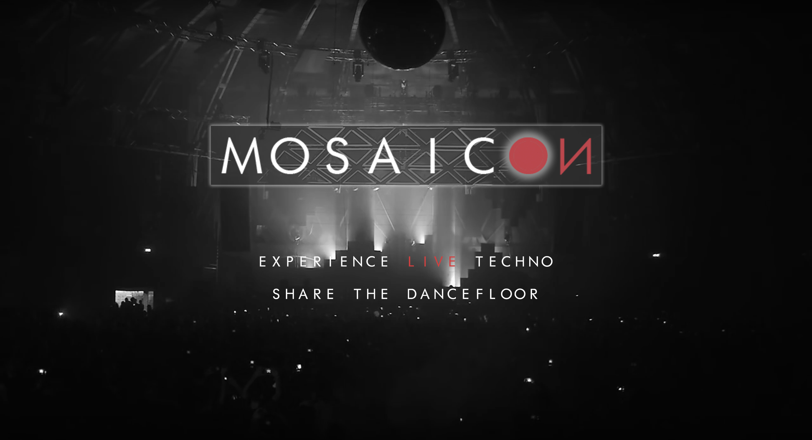

Nome del progetto: MOSAICON
Repository del sito di presentazione progetto: https://github.com/SoNet-2017/MOSAICON
Repository del prototipo (codice): https://github.com/SoNet-2017/MOSAICON-code
| Matricola | Cognome | Nome | GitHub | |
|---|---|---|---|---|
| 243902 | Mattia | Meloni | imelon24@yahoo.com | mlnmtt |
| 240680 | Danilo | Ronchi | mastarwonki@hotmail.it | mastarwonki |
| 193204 | Luca | Leli | luca_toni@live.it | russia1993 |
| 240750 | Giuliano | Cammarata | giuliano.cammarata@studenti.polito.it | giul.cammarata |
Mosaicon è un social network per dirette streaming online degli eventi di musica elettronica e la
self-promotion. È dedicato a clubbers, produttori, DJ, festival e club. Ogni evento ruota attorno allo
streaming audio in alta qualità del DJ set. I clubbers possono riprendere col proprio smartphone una
diretta video da mandare in streaming online, in sync con la traccia audio del DJ. Tramite l'applicazione
web e mobile chiunque può diventare regista delle riprese dell'evento, grazie a un player fatto a mosaico.
Gli organizzatori di eventi possono così usufruire di un servizio orizzontale gratuito in stile televisone
e promuovere feste, location e la musica.

Clubbers: tendenza a riprendere gli eventi in diretta con gli smartphone.
Festival & Club: live streaming degli eventi in stile TV per promozione.
Produttori & DJ: canale overground per ottenere visibilità tramite un sistema orizzontale.
Aggregare tutti i membri della club culture in una piattaforma dedicata prima, dopo e durante gli eventi.
Il "Prosumer" è lo user standard.
Il "Broadcast" è il super-user.
Per upload streaming audio, tramite scheda audio PC, bisogna iscriversi come Broadcast.
PROSUMER:
- Passivo: Jules, studente che non ama la vita notturna, ma apprezza molto la musica elettronica e non
spenderebbe sempre i soldi del biglietto per andare a ballare.
- Attivo: Walid, real clubber under 30, ma anche PR determinato, che ama fare i video con lo smartphone e
pubblicare contenuti in diretta sui social.
BROADCAST:
- DJ: Russia, produttore emergente della scena techno torinese, che fa self-promotion alla sua musica sui
social e suona nei locali underground della città.
- Club: MMM, nuova organizzazione di eventi techno a Torino, che cerca spazi per piccole e grandi feste e
clientela da fidelizzare.
Relazioni simmetriche tra Prosumer e asimettriche tra Prosumer e Broadcast, integrate con notifiche push per tenere traccia delle dirette.
"MMM organizza una festa techno al Bunker di Torino il 16 giugno 2017 e crea e pubblica l'evento sulla
Timeline di MOSAICON.
Tra i DJ ospiti in line-up, Russia è stato contattato tramite PM sulla piattaforma.
A Jules (come a tutti i follower di MMM e di Russia) arriva una notifica push per invitarlo a partecipare
e impostare un promemoria per l'evento all'interno dell'applicazione.
Jules a sua volta condivide pubblicamente e privatamente l'evento con i propri amici.
Il 16 giugno, quando Russia suona, MOSAICON trasforma l'evento della timeline in uno streaming audio HQ
ascoltabile da remoto in diretta del DJ set.
Jules e tutti gli invitati ricevono una notifica push per collegarsi in diretta o per presentarsi di
persona sul luogo.
I PR di MMM e tutti i clubbers presenti (come Jules) al Bunker possono riprendere col proprio smartphone
video della festa senza audio. Raccolti in una interfaccia a mosaico, vengono sincronizzati con l'audio HQ
del DJ set di Russia.
Gli amici invitati da Jules e i follower di Russia e MMM che non possono partecipare alla festa al Bunker,
seguono l'evento da casa o da mobile su Mosaicon, con audio HQ e il mosaico delle riprese per poter scegliere
il punto di vista migliore o quello preferito.
Durante la diretta, gli amici di Jules vorrebbero essere lì con lui e condividono il loro desiderio con tutti
tramite la piattaforma o l'app.
Ogni ripresa video fatta da Jules viene salvata sul suo smartphone.
Alla fine della serata, il DJ set di Russia rimane disponibile online all'interno della storia
dell'evento organizzato da MMM su Mosaicon.
I giorni seguenti MMM correda la traccia audio dell'evento con una descrizione testuale della festa e tutte
le foto e i video ufficiali.
Jules, condivide i suoi ricordi con recensioni, GIF e foto sulla storia dell'evento ripescandoli dalle riprese
che aveva fatto in diretta al Bunker.
Tutti i follower di MMM, Russia e Jules che hanno partecipato realmente o virtualmente all'evento ricevono
una notifica push sugli aggiornamenti raccontati dagli utenti sulla storia dell'evento.
Chiunque voglia rivivere una festa del passato la può cercare su Mosaicon, corredata da audio HQ, storie,
recensioni, foto e GIF."
| Modello d'azione | Concept e caratteristiche comunicative | Features abilitate |
|---|---|---|
| Raccogliere | V | Podcast audio HQ, mappe, storie e foto animate di eventi passati |
| Condividere | V | Dirette video, streaming audio HQ, eventi |
| Pubblicare | V | Audio, foto, video, GIF, reviews, storie, eventi |
| Dare feedback | V | Reviews, views, plays, numero di partecipanti reali e virtuali alle dirette |
| Comunicare | V | PM per contattare i DJ, chat tra utenti, notifiche push delle dirette |
| Collaborare | V | Self-promotion per DJ e club grazie alla partecipazione attiva dei clubbers |
| Competere | X |
| Funzionalità complete | Descrizione |
|---|---|
| Streaming audio-video | Flussi dati audio HQ e video separati in diretta |
| Mosaico dirette | Ogni streaming audio in HQ è visibile da remoto attraverso un interfaccia grafica a mosaico, dinamica e interattiva |
| Mosaico eventi | Ogni streaming audio in HQ rimane disponibile per sempre, assieme alle esperienze raccontate dai clubbers con foto e GIF |
| Passaporto overground | Partecipare agli eventi, suonando o riprendendo, arrichisce la popolarità di DJ e clubbers, tenendo traccia di attività e location |
| Timeline | Timeline degli eventi passati, presenti e futuri per vivere o programmare esperienze |
| Funzionalità completa | Funzionalità dettagliate |
|---|---|
| Base |
|
| Streaming audio-video |
|
| Mosaico diretta evento |
|
| Mosaico evento |
|
| Passaporto Overground |
|
| Timeline (Home) |
|
Struttura di navigazione

Funzione upload media
.png)
Inserire il mockup realizzato con Balsamiq
Inserire il video di "promozione" del vostro social network
Gli utenti che hanno preso parte all'indagine sono prevalentemente giovani con età compresa tra 18 e 45 anni, perlopiù studenti. La nostra attenzione è stata chiaramente indirizzata verso coloro i quali amano trascorrere il tempo libero ascoltando musica da club, andando a ballare e cercando informazioni su eventi musicali interessanti e compatibili con i loro gusti (clubbers e DJ).
Per l'indagine riguardante i clubbers è stata stilata una survey che ha ricevuto 92 risposte:
vedi MOSAICON su Google Forms.
Per i DJ è stato organizzato un FOCUS GROUP con traccia semi-strutturata per permettere maggiore spontaneità tra direttore e partecipanti,
data la relazione d'amicizia che intercorre tra le parti. I punti fondamentali affrontati sono stati:
1. Pregi e difetti di piattaforme social come SoundCloud e MixCloud, ormai un "must" per la carriera (competitor di Mosaicon);
2. Modalità e necessità di interazione con il pubblico (argomentazioni rispetto al trend di riprendere con il cellulare);
3. Discussione su funzionalità innovative da proporre per superare i limiti dei competitor.
Analisi sui clubbers:


Analisi sui DJ:
1. Ritengono SoundCloud un buon mezzo di promozione, forse l'unico che permette di proporre la propria musica gratuitamente,
sebbene ormai, trovandosi di fronte a competitor dello streaming audio come Spotify e altri colossi, il social stia cercando di strizzare
l'occhio più alle major che agli utenti underground, che compongono almeno il 90% della piattaforma, per aumentare i profitti.
MixCloud è ritenuto poco versatile e funzionale, loro stessi a volte preferiscono riversare i propri mixati su SoundCloud.
2. Il rapporto con il pubblico è essenziale all'unanimità, ognuno si rapporta a suo modo ma la costante è essere presenti, dal vivo e non.
Essere ripresi con il cellulare durante una serata è motivo d'orgoglio, significa essere riusciti a entrare nel cuore della gente
con la propria musica.
3. Dopo aver introdotto brevemente le funzionalità proposte dall'ipotetico social, è emerso che tutte possono servire
all'utente-tipo intervistato: avere un passaporto degli eventi significa poter comunicare ai seguaci gli eventi
organizzati e quelli che si organizzeranno, usufruire quindi dell'evento offline rivivendo l'esperienza del club
può solo far bene alla figura del dj che può essere scoperto da altri utenti non presenti alla serata, o ai locali interessati ad
arricchire il roster. Molto apprezzata l'idea del mosaico, vista però più utile per i clubbers che per loro.
Infine, essenziale la presenza di una traccia audio HQ per dare "giustizia" al lavoro eseguito live, evitando
di far sentire l'audio originale del cellulare.
Non ci sono stati particolari problemi riscontrati nella nostra visione del social rispetto a quella degli utenti, tutto è stato
fortunatamente confermato e arricchito da alcuni suggerimenti, in corso di discussione all'interno del team. L'unica pecca è stata
non essere riusciti a proporre un'intervista approfondita ai locali nonostante avessimo già la traccia pronta,
poiché difficoltoso entrarvi in contatto, ma contiamo di farlo per il futuro.
Le funzionalità proposte sono state confermate dalle interviste, difatti le percentuali di gradimento si attestano su una media
piuttosto equilibrata; si cercherà di implementarle con attenzione maggiore rispetto alle singole percentuali di gradimento.